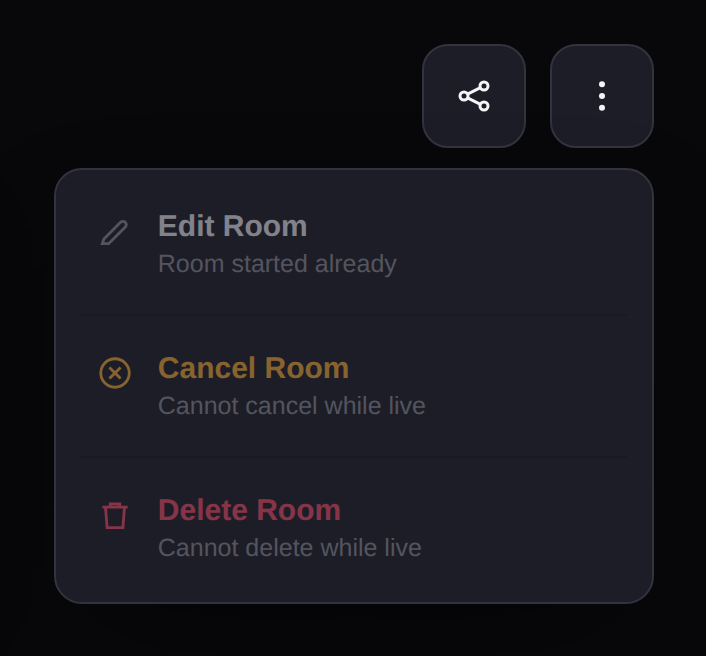
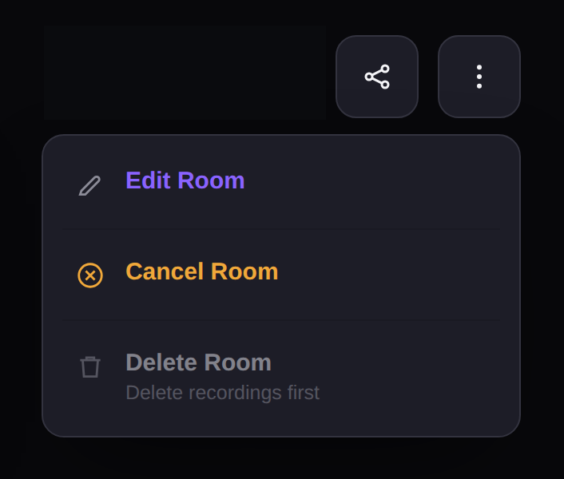
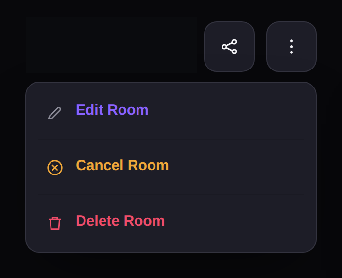
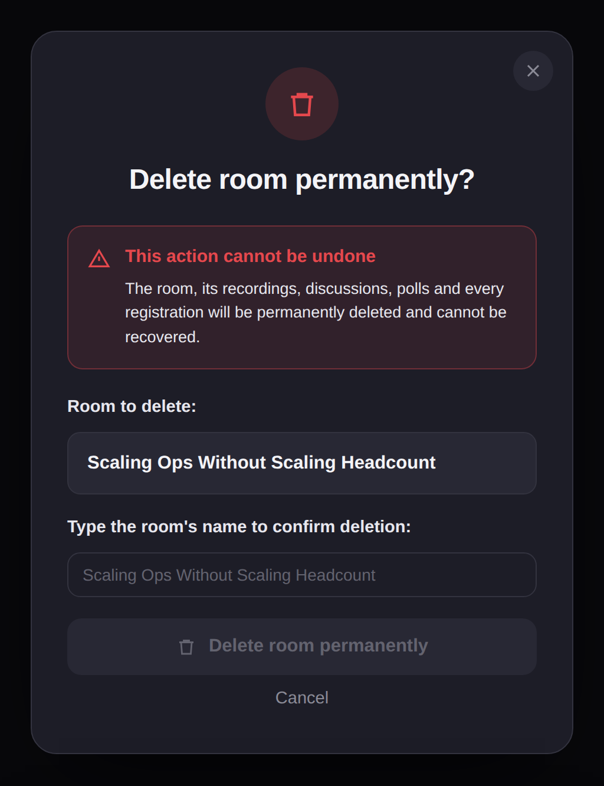
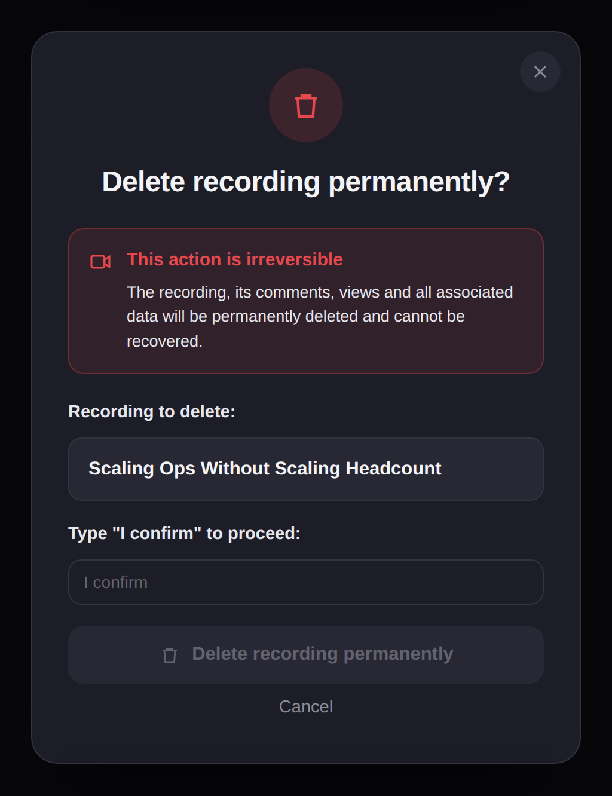

Delete a room or recording
Delete video rooms and recordings when they are no longer needed. Some actions are blocked depending on the room's current state — for example, you cannot delete a room while a session is live, or while recordings still exist. This article covers each scenario and the steps to resolve it.
Before you get started
- You must have an Admin or Moderator role to delete rooms and recordings.
- Both room deletion and recording deletion are permanent and cannot be undone.
- These steps apply to scheduled video sessions, instant drop-in calls, and webinars.
Room actions while a session is live
While a session is actively running, the Cancel Room and Delete Room options are disabled in the three-dot menu (⋮). Edit Room shows "Room started already," Cancel Room shows "Cannot cancel while live," and Delete Room shows "Cannot delete while live."
To access cancel or delete options, end the session first by clicking Leave in the call toolbar and selecting End for Everyone.

Delete a room that has recordings
If a room has one or more recordings, the Delete Room option is disabled and shows "Delete recordings first." You must delete all recordings before you can delete the room.
- On the room detail page, click the three-dot menu (⋮) in the top-right corner.
- If the room has recordings, Delete Room is greyed out with the message "Delete recordings first."
- Delete all recordings from the Recordings tab. See Manage recordings for the full steps.
- Once all recordings are removed, return to the three-dot menu — Delete Room is now active.


Delete a room
Once the session has ended and all recordings have been removed, you can permanently delete the room.
- On the room detail page, click the three-dot menu (⋮) in the top-right corner.
- Click Delete Room.
- A confirmation dialog warns that this action cannot be undone — the room, its recordings, discussions, polls, and every registration will be permanently deleted and cannot be recovered.
- Type the room's name to confirm deletion.
- Click Delete room permanently. To cancel, click Cancel.

Cancel a room
Cancelling a room marks it as cancelled without deleting it. The room remains visible but participants can no longer join.
- On the room detail page, click the three-dot menu (⋮) in the top-right corner.
- Click Cancel Room.
Delete a recording
You can delete individual recordings from the recording playback page.
- Navigate to the room detail page and click the Recordings tab.
- Click View Session on the recording you want to delete.
- On the recording page, click Delete.
- A confirmation dialog warns that this action is irreversible — the recording, its comments, views, and all associated data will be permanently deleted and cannot be recovered.
- Type "I confirm" in the text field.
- Click Delete recording permanently. To cancel, click Cancel.
